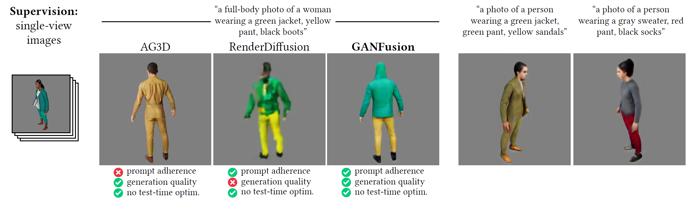
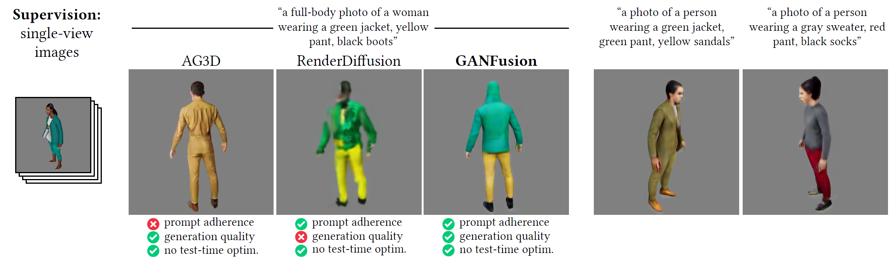

We train a feed-forward text-to-3D diffusion generator for human characters using only single-view 2D data for supervision. Existing 3D generative models cannot yet match the fidelity of image and/or video generative models. Stateof-the-art 3D generators are either trained with explicit 3D supervision and are thus limited by the volume and diversity of existing 3D data. Meanwhile, generators that can be trained with only 2D data as supervision typically produce coarser results, cannot be text-conditioned, and/or must revert to test-time optimization. We observe that GAN- and diffusion-based generators have complementary qualities: GANs can be trained efficiently with 2D supervision to produce high-quality 3D objects but are hard to condition on text. In contrast, denoising diffusion models can be conditioned efficiently but tend to be hard to train with only 2D supervision. We introduce GANFusion that starts by generating unconditional triplane features for 3D data using a GAN architecture trained with only single-view 2D data. We then generate random samples from the GAN, caption them, and train a text-conditioned diffusion model that directly learns to sample from the space of good triplane features that can be decoded into 3D objects. We evaluate the proposed method in the context of text-conditioned full-body human generation and show improvements over possible alternatives.